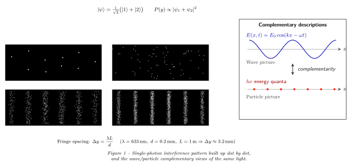

光到底是波还是粒子?
上一节我们看到, 爱因斯坦 1905 年的光电效应让"光子"这颗石头重新落回物理学的心口, 经过康普顿 1923 年的散射实验, 光作为粒子再也无法否认。可与此同时, 整个 19 世纪的干涉、衍射、偏振实验又在大声喊: 光就是波。一束光既过双缝又显条纹, 又能敲出一颗一颗离散的光电子, 它到底是什么?
这个矛盾不是用哪一边"压过"哪一边能解决的。本节要做的, 是把光强一点点调暗, 暗到一次只有一个光子在干涉仪里旅行, 看看实验会怎么回答。结果既让人不安, 又让人震撼: 一个光子, 自己与自己干涉。
一、海量光子与可数光子 —— 先做一次估算
要谈"单光子", 我们得先知道平时的光里到底有多少光子。可见光的频率约 $\nu \approx 5\times 10^{14}$ Hz, 单个光子的能量
$$ E_\gamma = h\nu \approx 6.6\times 10^{-34}\,\mathrm{J\cdot s}\times 5\times 10^{14}\,\mathrm{Hz}\approx 3.3\times 10^{-19}\,\mathrm{J}\approx 2\,\mathrm{eV}. \tag{1}$$
一盏 100 W 的白炽灯, 大约 5% 的电能变成可见光, 也就是 5 W。那么每秒放出的光子数
$$ N \approx \frac{5\,\mathrm{W}}{3.3\times 10^{-19}\,\mathrm{J}} \approx 1.5\times 10^{19}\,\mathrm{光子/秒}. \tag{2}$$
这是每秒 $10^{19}$ 个量级的洪流 —— 任何探测器都被淹没, 统计涨落 $\sqrt N/N \sim 10^{-10}$ 小到看不见, 光看上去就是一条连续的经典波。于是你会问: 要让"单光子"成为实验中能点数的事件, 到底得弱到什么程度?
一个典型的现代单光子计数器, 比如雪崩光电二极管, 死时间约 50 ns, 理想计数率约 $2\times 10^7$ s$^{-1}$。我们希望在实验中"一次只有一个光子在干涉仪里", 也就是光程 $\sim 1$ m / $c \sim 3$ ns 内平均不到 1 个光子, 那么到达速率应 $\lesssim 3\times 10^{8}$ 光子/秒, 比 100 W 灯泡少 $11$ 个量级。要做到这一步, 历史上人们先后用了三种办法: 把光源拉远、加中性衰减片, 以及最后发明真正的单光子源。

二、Taylor 1909 —— 几乎全黑的双缝
早在量子力学正式诞生之前, 英国剑桥的 Geoffrey Ingram Taylor (那时才 23 岁) 已经做了历史上第一次弱光干涉实验。他把一盏煤气灯用烟熏玻璃片衰减到极弱, 弱到如果光是经典粒子、每个粒子走自己的路, 那么在任意时刻干涉仪里几乎永远只有零个或一个粒子。然后他把一根细针挡在前面作为衍射源, 用底片记录下衍射图样。
为了让底片曝光到可见的程度, 他把底片关在黑暗的房间里曝了 三个月。结果冲出来的底片上, 衍射条纹清清楚楚, 和用强光曝光几秒钟得到的条纹完全一样。换句话说: 哪怕一次只有一个"粒子"在仪器里, 它也会在底片上按波的干涉规律分布。
Taylor 1909 的实验在当时并没有立刻撼动经典图像, 因为严格来说他的光源只是衰减过的热光, 从现代量子光学看, 其光子统计仍是 Poisson 分布, 偶尔还是会有两个光子同时在仪器里。但它提出了一个关键的实验事实: 即使平均光子数小于 1, 干涉也不消失。这意味着"两束光互相干涉"的经典图像不可能是对的 —— 因为这里根本就只有"一束"。
真正把"单个光子自己与自己干涉"钉死在实验里, 要等到 1986 年。Grangier、Roger 和 Aspect 三人用级联原子辐射得到的 heralded single photon —— 一个光子被探测到后, 我们确定地知道它的伙伴光子正在赶往干涉仪 —— 把它送进一台 Mach-Zehnder 干涉仪。结果同时满足两件事: (i) 在没有合束的单束路径上做反符合测量, 反符合参数 $\alpha\lt 1$, 严格证明每次进入干涉仪的是"一个"光子; (ii) 把两路合回到一起后, 干涉条纹的可见度 $V$ 接近 1。
"一个不可分的粒子同时走两条路", 这件事被从实验上关紧了最后一扇门。
三、叠加态与测量 —— "走哪条"这个问题没有答案
量子力学对这个实验的描述非常干净。令 $|1\rangle$ 表示"光子从上路 (缝 1) 通过"的态, $|2\rangle$ 表示从下路通过的态, 则进入双缝之后, 光子的态是两者的相干叠加
$$ |\psi\rangle = \frac{1}{\sqrt 2}\big(|1\rangle + e^{i\varphi}|2\rangle\big). \tag{3}$$
这里 $\varphi$ 是两条路径的相位差, 由几何路程差 $\Delta = d\sin\theta$ 决定, $\varphi = 2\pi \Delta/\lambda$。要问屏幕上 $y$ 位置击中的概率, 量子力学告诉我们把位置上的波函数振幅加起来再取模方:
$$ P(y) \propto |\psi_1(y)+\psi_2(y)|^2 = |\psi_1|^2+|\psi_2|^2+ 2|\psi_1||\psi_2|\cos\varphi(y). \tag{4}$$
最后那个 $\cos\varphi$ 正是干涉项, 它让 $P(y)$ 在屏上出现明暗条纹。注意我们写下式 (3) 的时候, 并没有说"光子其实走的是 1"。那个问题在量子力学里没有经典意义上的答案 —— 在测量之前, 它的"路径"这个属性还没有被定义。
这里有一个非常重要的极限检验。假设你在其中一条缝后面偷偷放一个探测器, 想知道光子走的是哪一条。这时只要探测器给出 1/2 的 which-path 信息, 叠加态 (3) 就塌缩为 $|1\rangle$ 或 $|2\rangle$, 干涉项 $2|\psi_1||\psi_2|\cos\varphi$ 完全消失, $P(y)$ 变成两个独立的单缝衍射强度的非相干叠加。再定量一点, 若路径信息的"可区分度"为 $\mathcal D$, 条纹可见度 $\mathcal V$, 人们已经证明
$$ \mathcal V^2 + \mathcal D^2 \le 1. \tag{5}$$
"粒子性"和"波动性"在同一个实验里此消彼长 —— 你看清了路径, 就看不到条纹; 你看到了条纹, 就不能知道路径。这正是 Bohr 在 1927 年 Como 会议上提出的互补原理 (complementarity): 波和粒子是两种互斥但都必要的描述, 哪一种会在实验中显现, 取决于你问什么问题。
另一种检验: 把光强从极弱拉到极强。单个光子时, 每一次点击都是随机的, 但累计下来分布是条纹; 每秒 $10^{19}$ 个光子同时过双缝, 单次点击的随机性被巨大数目抹平 (统计涨落 $\sim 10^{-10}$), 屏幕上看到的是连续的经典波干涉。两种图像的分界线, 其实只是"一次里多少个"这个数字。
四、Wheeler 延迟选择与"光子是什么" —— 场的激发
人们自然会怀疑: 会不会是光子在进双缝之前"知道"了你将不将要测它的路径, 然后相应地决定是以粒子还是以波的方式行动? John Wheeler 1978 年提出了延迟选择实验来封死这条逃生路: 让光子进入干涉仪、通过双缝, 然后在它已经在路上之后再决定最后一步是合束 (看干涉) 还是分束 (看路径)。如果互补性是光子"事先准备好的策略", 延迟选择应该打破它; 如果互补性是真正的量子实在, 延迟选择也应服从。
1980 年代后期的实验 (Hellmuth, Walther 等) 和 2007 年 Jacques 等在巴黎用电光调制器做的严格延迟选择实验都确认: 即使你在光子已经通过双缝之后才决定测不测路径, 最终观察到的图样仍然和"事先决定"得到的一致。换句话说, "它是波还是粒子"并不是光子在某个时刻偷偷选好的属性, 而是由整个实验配置共同定义的上下文依赖量。这让互补原理的地位变得更不可动摇。
那么, 回到本节标题 —— 光到底是波还是粒子? 到这里我们可以给一个比较诚实的回答: 都不是。
"小球"式的粒子和"水面涟漪"式的波都是我们从宏观世界搬来的图像, 它们各自在某类实验里管用, 但都不完整。真正完整的描述, 是 1927 年之后由 Dirac、Jordan、Heisenberg 等人发展的量子电动力学 (QED): 空间中的每一个电磁模式 (一组波矢 $\mathbf k$ 和偏振 $\epsilon$) 都是一个量子谐振子, 它的能级由整数 $n=0,1,2,\dots$ 标记, 记为 $|n\rangle_{\mathbf k,\epsilon}$。$n$ 就是该模式里光子的个数。"一个光子"是该量子模式从基态被抬升一阶的激发, 它的波函数给出它在哪里被吸收的概率振幅, 它的离散性体现为能量量子 $h\nu$ 的不可分割。
在这套语言下, 双缝干涉自然就是: 一个激发可以沿两条路径传播, 两条路径对应的振幅相干相加, 模方给出吸收概率, 所以我们既看到单点式的吸收 (粒子性来自 $n$ 取整数), 又看到干涉条纹 (波动性来自振幅相加)。波与粒子不再是两种"东西", 而是同一个"量子场模式"在不同测量下的两种面貌。
从历史看, 这条线从 de Broglie 1924 年的"物质也是波"开始, 经过 Bohr 1927 年的哥本哈根诠释, Heisenberg、Dirac 1927–1928 的场量子化, 到 1948 年 Feynman 的路径积分表述终于给出一个特别直观的版本: 光子从源到屏, 所有可能的路径都各贡献一个幅 $e^{iS/\hbar}$, 把它们加起来, 就得到双缝公式 (4)。那句流传已久的"光走光程最短的路", 原来是这种大数极限下所有路径干涉相消之后留下的鞍点。
小结
从 Taylor 1909 的几个月曝光, 到 Aspect 1986 的 heralded 单光子, 实验逐步把"光的波粒矛盾"逼进了一个角落: 矛盾的解决方案不是在两种经典图像里二选一, 而是抛弃两者都不完整的经典图像, 承认光是量子电磁场的激发。本节给我们留下三条线索去回答贯穿全书的"光是什么": (i) 光的粒子性来自场模式的能级离散化 $|n\rangle$; (ii) 光的波动性来自态叠加和振幅干涉; (iii) 具体你看到哪一种, 由你怎么测决定, 这正是 Bohr 互补原理的现代意义。下一节我们要走到这个量子场的最深处 —— 连一个光子都没有的所谓"真空", 看看那里是否真的什么都没有, 以及为什么即使空无一物的真空也能给出可测量的力与光。
▲